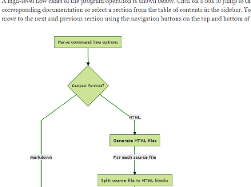
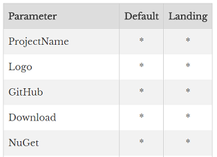
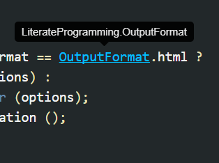
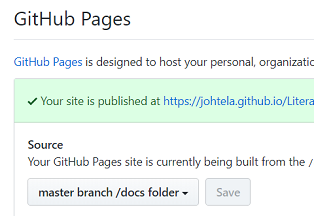

Step 1: Write Your Documentation
Embed your documentation inside code comments or put it into separate markdown files. All the formatting features of markdown are available to you. Markdig library is used to convert the markdown to HTML. It offers a lot of useful extensions from MathJax formulas to mermaid diagrams.


Step 2: Customize the Output
Generate either raw markdown files or standalone web sites. Using themes and styles you can customize the appearance of the pages. Include a YAML front matter in your source files to pass parameters to the site generator.
Step 3: Add Table of Contents
A table of contents file defines the structure of your documentation. A TOC file can be automatically generated and updated. The outputted web pages include a navigation pane and navigation buttons to jump from one page to another.


Step 4: Generate the Documentation
The documentation "weaver" uses Roslyn to parse and analyze your source code. Syntactic and semantic information provided by Roslyn is used for syntax-highlighting, and for adding cross-references and type information to the code blocks. You can jump to the definition of a symbol by clicking it, or inspect its type by hovering over it.
Step 5: Publish Your Docs
If your code resides under GitHub, you can publish it under
GitHub Pages by turning on a single option in the
project settings. Just generate your documentation under the docs folder,
and turn it on. Done!

Give It a Try!
The tool is packaged as a NuGet package and is installed as a global tool. Installation instructions can be found... . You can also clone the repository and build the tool from the sources.